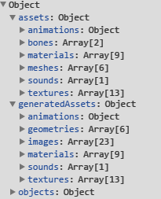

Lozi
Export from Unity3D to WebGL
Documentation
Exported object will look like this after data parsed
| createObject(id:Object, uniqueMaterials:Boolean):LoziObject | Creates loziObject by passed id or hierarchy path for example: "object1/object2/object3", if hierarchy doesn't contains object with given id it will create object from data.objects first element, by default id is undefined, if uniqueMaterials is true object will be generated with new materials, default is false |
| dispose():Void | Disposes loaded object |
| assets:Object | Contains everything parsed from json |
| generatedAssets:Object | Contains generated assets including materials and geometries, every instance of mesh uses generated materials and geometries from generatedAssets object, in other words, every geometry, material or texture is initialized once when loaded |
| objects:Object | Hierarchy representation of objects in loaded data |
- Lozi
- Lozi.Math
- Lozi.Utils
- Lozi.Libraries
- Lozi.Static
- ProgressObject params
- CompleteObject params
- LoziObject
| load(url:String, complete:Function, onProgress:Function ( ProgressObject ), error:Function, generateObject:Boolean):Void | loads lozi json string data from url, if generateObject is false loaded data will be parsed but object will not be created, default is true |
| loadFromString(string:String, complete:Function, onProgress:Function ( ProgressObject ), error:Function, generateObject:Boolean):Void | loads lozi json string, if generateObject is false data will be parsed but object will not be created, default is true |
| loadFromData(string:String, complete:Function, onProgress:Function ( ProgressObject ), generateObject:Boolean):Void | generates lozi parsed data, if generateObject is false data will be generated but object will not be created, default is true |
| loadFromGeneratedData(data:Object):Void | generates loziObject from parsed and generated data |
| disposeData(data:Object):Void | iteratively clears every property in data |
| version():Float | returns library version |
| Math | Math helper functions |
| Utils | Helper functions |
| Libraries | Object for webgl library functions |
| Static | functions for parsing and creating loziObject |
| radians(degree:Float):Float | converts degrees to radians |
| degrees(degree:Float):Float | converts radians to degrees |
| eulerAngles(object:Object,x:Float,y:Float,z:Float):Vector3 | Sets and returns object's euler angles in degrees |
| getMousePosition(event:Event,element:DomElement):Vector2 | Returns correct mouse position on canvas element |
| getObjectByProperty(objects:Array,prop:String,val:Object):Object | Searches object in given array by property and value |
| getPropertyArray(arr:Array,property:String,remove:Boolean):Array | searches properties in array items and returns array with found properties, if remove is true, than old object with property will be cleared, default is false |
| clearArray(arr:Array,func:Function,clearLevel:Int,exclude:Array):Void | clears given array, function iterates thru items and if item is object iteratively clears object and its children func:function for custom logic before object item cleared clearlevel:how deep clear process must go, for example clearlevel = 0, only current array will be cleared, clearlevel = 1 will clear array and items children, clearlevel = 2 will clear array and items children's items, etc... exclude: will exclude properties in items |
| clearObject(obj:Object,func:Function,clearLevel:Int,exclude:Array):Void | clears given object, function iterates thru object's properties and clears object and its children func:function for custom logic before object cleared clearlevel:how deep clear process must go, for example clearlevel = 0, only current object will be cleared, clearlevel = 1 will clear objects and it's property objects, clearlevel = 2 will clear object's property objects and property object's property objects (inception), etc... exclude: will exclude properties in object |
| object():Object | Returns included webGL library, if nothing is found throws error |
| Three:Object | Object for handling three.js library, creating geometry, material, textures, etc... |
| Geometry:Object | Object for handling geometry |
| Material:Object | Object for handling material |
| Texture:Object | Object for handling texture |
| Sound:Object | Object for handling sound |
| Animation:Object | Object for handling animation |
| Light:Object | Object for handling light |
| Camera:Object | Object for handling camera |
| ScriptProperties:Object | Object for handling script properties |
| Colliders:Object | Object for handling colliders |
| Object:Object | Object for handling generating object |
| totalProgress:Float | total loaded progress, from 0 to 1 |
| dataProgress:Float | loaded data progress, from 0 to 1 |
| assetsProgress:Float | loaded textures progress, from 0 to 1 |
| data:Object | parsed and generated object |
| object:LoziObject | generated loziObject |
| update(delta:Float):Void | Updates object's animations |
| clone(uniqueMaterial:Boolean):Object | Clones object and returnes cloned, if uniqueMaterial is true new materials will be created and assigned to cloned object, default is false |
| combineMeshes():Void | Combines meshes by material |
| delete(deleteData:Boolean):Void | deletes object, if deleteData is true loaded and generated data will be disposed also, default is false |
| euler(x:Float, y:Float, z:Float):Void | rotates object to degrees |
| setOnMouseMove(renderer:Renderer,callback:Function):Void | Sets Mouse Move event, Renderer and callback should be passed |
| setOnMouseClick(renderer:Renderer,callback:Function):Void | Sets Mouse Click event, Renderer and callback should be passed |
| activeCamera(index:Int):Camera | Sets active camera, by default camera with index 0 is returned |
| objects(getAll:Boolean):Array | Returns array of objects including self and children, if getAll is true bones will be included too, default is false |
| getObjectByPath(path:String):Object | Returns object from requested path |
| meshes():Array | Returns array of object's meshes |
| geometries():Array | Returns array of generated geometries from loaded data |
| data():Object | Returns parsed and generated data from loaded data |
| images():Array | Returns array of loaded images |
| textures():Array | Returns array of generated textures |
| materials():Array | Returns array of generated materials |
| getMaterialByName(name:String):Material | Returns Material with requested name |
| lights():Array | Returns array of object's lights |
| cameras():Array | Returns array of object's cameras |
| animations():Array | Returns array of animations of self and children |
| colliders():Array | Returns array of collider objects |
| properties():Array | Returns array of objects with properties |
| soundSources():Array | Returns array of sound sources in object |
| soundListeners():Array | Returns array of sound listeners in object |
| blendShapes():Array | Returns Blendshapes array |
| getProperty(objectIndex:Int, scriptname:String, field:String, returnType:Boolean):Object | Returns field property from scriptname property object at given index of properties array, if returnType is true object with type string will be returned |
| getCollider(objectIndex:Int):Object | Returns collider object at given index of colliders array |
| createSoundListener(obj:Object):Object | Creates sound listener and adds to passed object |
| setSoundListenerVolume(index:Int,vol:Float):Void | Sets sound listener volume at given index of soundListeners array, from 0 to 1 |
| setSoundSourceSpeed(index:Int,rate:Float):Void | Sets sound speed at given index of soundSources array, from 0 to 10 |
| playSoundSource(index:Int):Void | Plays sound at given index of soundSources array |
| pauseSoundSource(index:Int):Void | Pauses playing sound at given index of soundSources array |
| stopSoundSource(index:Int):Void | Stops playing sound at given index of soundSources array |
| setSoundSourceVolume(index:Int,vol:Float):Void | Sets sound source volume at given index of soundSources array, from 0 to 1 |
| createSoundElement(name:String):DomElement | Creates Audio tag with sound of same name if it exists in data Object |
| setBlendShape(index:int,targetName:String,target:Float,time:Float):Void | Fades blendShape to given target weight with duration at given index of blendshapes array |
| playAnimation(index:int,clipName:String,fade:Float,playPrevOnFinish:Boolean):Void | Fades in animation with given clip name at given index of animations array, if playPrevOnFinish set to true, than previous looped animation starts playing when clipped animation finishes |
| stopAnimation(index:int):Void | Stops animation at given index of animations array |